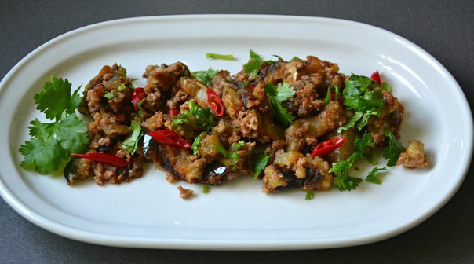

____
Традиционная еда
Рис с овощами на гарнир по-азиатски — Горячо любимое всеми азиатами и туристами, посещающими Тайланд, Китай, Шри-Ланку и иже с ними блюдо - отварной рис, перемешанный с овощами и куриным яйцом.

Кальмар с солью и перцем — Нежные кусочки кальмара в тоненькой хрустящей панировке, обжаренные в кляре и посыпанные специями, это закуска к пиву в лучших традициях китайской кухни.

Куриный суп с рисовой лапшой — Суп легкий и диетический, на курином бульоне, с оригинальным вкусом в традициях китайской кухни.
Баклажаны жареные с мясным фаршем — Блюдо очень пикантное и ооочень острое. Баклажаны, обжаренные с мясным фаршем в остром соусе.

Пряные креветки — Пряные креветки в чесночно-имбирном соусе. Это вкусное легкое блюдо относится к китайской кухне. Креветки получаются пикантными, но все-таки не сильно острыми.
Курица в кисло-сладком соусе — блюдо из моллюсков, которые режутся или перемалываются с кусочками рыбы, варятся в масле денде с добавлением сока кокосов и кусочков хлеба.
Свинина в кисло-сладком соусе с ананасами — Свинина в кисло-сладком соусе относится к традиционным китайским блюдам. Острые пряности, сладкий перец и ананас удивительно легко сочетаются в этом экзотическом рецепте.
____